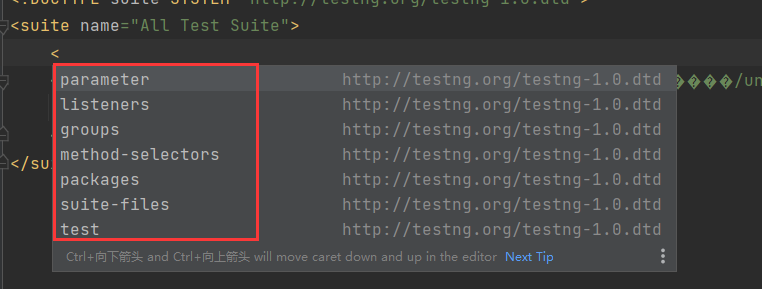

1.testng简介
1.1 官网
1.2 准备工作
1.2.1 IDEA安装testng插件
- TestNG
- Create TestNG XML
1.2.2 maven项目中导入jar包
1 | <!-- https://mvnrepository.com/artifact/org.testng/testng --> |
1.3 testng使用步骤
- 1.编写测试的业务逻辑并在代码中插入注解
- 2.生成和编辑testng.xml文件
- 3.运行testng
2.注解
2.1 分类
- 前置条件和后置条件
- 数据驱动
- 测试用例
- 监听器
2.1.1 测试用例
- 只有一个@Test注解
- @Test注解：作用是对测试用例进行控制，使用该注解的方法或类可以被testNG识别并运行
1 | import org.testng.annotations.Test; |
1 | import org.testng.annotations.Test; |
可以同时加在类和方法上
1
2
3
4
5
6
7
8
9
10
11
12
13
14import org.testng.annotations.Test;
public class TestDemo1 {
public void test1(){
System.out.println("1hello testng @Test");
}
public void test2(){
System.out.println("2hello testng @Test");
}
}
2.1.2 前置条件和后置条件
- 把注解作为前置条件（或初始化操作）和后置条件（或清理操作）使用
- 一共10个注解
@BeforeSuite：在该Suite的所有Test都未运行之前运行@AfterSuite：在该Suite的所有Test都未运行之后运行@BeforeTest：在该Test的所有Class都未运行之前运行@AfterTest：在该Test的所有Class都未运行之后运行@BeforeGroups：在该Class的第一个分组的@Test方法都未运行之前运行@AfterGroups：在该Class的最后一个分组的@Test方法都未运行之后运行@BeforeClass：在该Class的所有@Test方法都未运行之前运行@AfterClass：在该Class的所有@Test方法都未运行之后运行@BeforeMethod：在该Class的每个@Test方法都未运行之前运行@AfterMethod：在该Class的每个@Test方法都未运行之后运行
1.Suite
- @BeforeSuite
- @AfterSuite
1 | import org.testng.annotations.AfterSuite; |
2.Test
- @BeforeTest
- @AfterTest
1 | import org.testng.annotations.AfterTest; |
3.Class
@BeforeClass
@AfterClass
一个Class对应一个java类，在该java类中用@BeforeClass（或@AfterClass）修饰的方法会在该Class的所有@Test方法运行之前（或之后）运行
只能写在带有测试方法的类中，一个类中只运行一次
带有测试方法的类—测试类

1 | import org.testng.annotations.AfterClass; |
4.Method
- @BeforeMethod
- @AfterMethod
- 一个Method对应一个java方法，在该java类中用@BeforeMethod（或@AfterMethod）修饰的方法会在该Class的每个@Test方法运行之前（或之后）运行
- 只能写在带有测试方法的类中，一个类中有多少个测试方法运行多少次
- 带有@Test的方法—测试类方法
1 | import org.testng.annotations.*; |
5.Groups
- @BeforeGroups
- @AfterGroups
- Group的控制粒度介于Class和Method之间，一个Class可以包含多个Group，一个Group可以包含多个Method
- 多个Class中的测试方法可以在同一Group，通过testng.xml文件控制运行多个Class中的同一个Group运行
1 | import org.testng.annotations.AfterGroups; |
1 | import org.testng.annotations.AfterGroups; |
2.1.3 数据驱动
- testng的特点之一是数据驱动，即测试用例和测试数据分离，以便维护和管理
- 一共2个注解
- @Parameters
- 使用简单的参数值，可以在
testng.xml中指定它们，然后在测试方法中@@Parameters使用
- 使用简单的参数值，可以在
- @DataProvider
- 复杂的参数（复杂对象，从属性文件或数据库读取的对象等）
- @Parameters
1.@Parameters
可以在任何@Test、@Before/@After和@Factory注解的方法上使用
也可以放在构造函数上使用
在testng.xml中，可以在下面声明它
<suite><test><class><methods>
解析同名参数值的优先级顺序（从低到高）为（如果优先级高的参数名和优先级低的参数名重复，则覆盖值）
1
<suite> --> <test> --> <class> --> <methods>
1 |
|
1 | import org.testng.annotations.Parameters; |
如果在
testng.xml文件中没有找到名为v1,v2的参数，则测试方法将接收在@Optional注解中指定的默认值1
2
3
4
5
6
7
8
9
10
11
12
13
14
15
16
17
18import org.testng.annotations.Optional;
import org.testng.annotations.Parameters;
import org.testng.annotations.Test;
public class ParametersTest1 {
public void parametersScope( String v1, String v2){
System.out.println(v1 + "\t" + v2);
}
}
/*
峡谷杨爹 止水
===============================================
Default Suite
Total tests run: 1, Failures: 0, Skips: 0
===============================================
*/
2.@DataProvider
在不同的类中使用@DataProvider
在一个类中创建一个带有@DataProvider注解的方法（
public方法，它的返回类型是Object[][]）这个类需要是一个静态方法或一个带有非参数构造函数的类
返回的二维数组每一行代表一次测试的参数，每一行的元素跟Test中需要的参数一一对应
在另一个类中，使用@Test注解的方法，并在其中使用该数据提供者
1
2
3
4
5
6
7
8
9
10
11
12
13
14
15
16
17
18
19
20
21
22
23
24
25
26
27
28import org.testng.annotations.DataProvider;
public class DataProviderClass {
public Object[][] dataProviderMethod() {
return new Object[][] {
{"峡谷杨爹","26","男"},
{"测试","15","男"}
};
}
}
import org.testng.annotations.Test;
public class DataProviderTest {
public void case1(String name,String age,String sex){
System.out.println("name：" + name + "\tage："+age + "\tsex："+sex);
}
}
/*
name：峡谷杨爹 age：26 sex：男
name：测试 age：15 sex：男
===============================================
Default Suite
Total tests run: 2, Failures: 0, Skips: 0
===============================================
*/在相同的类中使用@DataProvider
1
2
3
4
5
6
7
8
9
10
11
12
13
14
15
16
17
18
19
20
21
22
23
24
25
26import org.testng.annotations.DataProvider;
import org.testng.annotations.Test;
public class DataProviderTest {
public void case1(String name,String age,String sex){
System.out.println("name：" + name + "\tage："+age + "\tsex："+sex);
}
public Object[][] dataProviderMethod() {
return new Object[][] {
{"峡谷杨爹","26","男"},
{"测试","15","男"}
};
}
}
/*
name：峡谷杨爹 age：26 sex：男
name：测试 age：15 sex：男
===============================================
Default Suite
Total tests run: 2, Failures: 0, Skips: 0
===============================================
*/
2.1.4 监听器
- 只有@Listeners注解
- 作用：监控测试过程
- 如果采用没有监听器，则不需要任何配置
- 如果使用自定义监听器，则需要使用@Listeners注解或testng.xml文件进行配置
- 测试类上的注解
- 创建testng提供的监听器接口的实现类，并把它们加入到 TestNG 中，TestNG 便会在测试运行的不同时刻调用这些类中的接口方法
- https://blog.csdn.net/lovedingd/article/details/111355321（待学习）
1.@Listeners
1 | import org.testng.ISuite; |
1 | import org.testng.annotations.Listeners; |
2.testng.xml
1 |
|
1 | import org.testng.annotations.Listeners; |
2.1.5 @Factory
- 将一个方法标记为工厂，返回TestNG将被用作测试类的对象。该方法必须返回Object[]
- https://blog.csdn.net/weixin_42439274/article/details/132642547
2.2 注解属性
2.2.1 @test
1 | package org.testng.annotations; |
- groups：该类/方法所属的组的列表
- enabled：是否启用了此类/方法，该类/方法方法是否要执行，默认为true执行
parameters：（已废弃）用于填充此方法的参数的变量列表，这些变量必须在testng.xml文件中定义，和@Parameters一样- dependsOnGroups：此方法所依赖的组的列表。其中一个组的每个方法成员都保证在此方法之前已被调用。此外，如果这些方法中的任何一个不是SUCCESS，则此测试方法将不会运行，并将被标记为SKIP
- dependsOnMethods：此方法所依赖的方法的列表。无法保证所依赖方法的运行顺序，但可以保证在运行包含此测试方法之前运行所有这些方法。此外，如果这些方法中的任何一个不是SUCCESS，则此测试方法将不会运行，并将被标记为SKIP。如果这些方法中的某些方法已被重载，则所有重载的版本都将运行
- timeOut：此测试应花费的最大毫秒数。如果在这段时间之后没有返回，它将被标记为FAIL
- invocationTimeOut：此测试方法上的调用总数应花费的最大毫秒数。如果未在此方法上指定invocationCount属性，则将忽略此注释。如果在这段时间之后没有返回，它将被标记为FAIL
- invocationCount：应调用此方法的次数
- threadPoolSize：此方法的线程池的大小。该方法将根据invocationCount的指定从多个线程调用。注意：如果未指定invocationCount，则忽略此属性
- successPercentage：此方法预期的成功百分比
- dataProvider：此测试方法的数据提供者的名称
- dataProviderClass：此测试方法的数据提供者所在的类
- alwaysRun：如果设置为true，则此测试方法将始终运行，即使它依赖于失败的方法。如果此测试不依赖于任何方法或组，则会忽略此属性
- description：此方法的描述。使用的字符串将出现在HTML报告中，如果verbose>=2，也会出现在标准输出中
- expectedExceptions：测试方法预期抛出的异常列表。如果没有抛出异常或与此列表中的异常不同的异常，则此测试将被标记为失败
- expectedExceptionsMessageRegExp：如果指定了expectedExceptions，则其消息必须与此属性中指定的正则表达式匹配
- suiteName：此测试类应放在其中的套件的名称。如果@test不在类级别，则忽略此属性
- testName：此测试类应该放在其中的测试的名称。如果@test不在类级别，则忽略此属性
sequential：（已废弃）使用单线程- singleThreaded：如果设置为true，则保证该测试类上的所有方法都在同一个线程中运行，即使当前正在使用parallel=“true”运行测试也是如此。此属性只能在类级别使用，如果在方法级别使用，则会被忽略
- retryAnalyzer：?
- skipFailedInvocations：如果为true并且invocationCount的值大于1，则失败后的所有调用都将标记为SKIP而不是FAIL
- ignoreMissingDependencies：如果设置为true，即使它所依赖的方法丢失或被排除，该测试也将运行
- priority：此测试方法的优先级，默认为0，0的优先级最高，0>1>2>3…
2.2.2 @Parameters
1 | package org.testng.annotations; |
- value：用于填充此方法的参数的变量列表，这些变量必须在testng.xml文件中定义
2.2.3 @DataProvider
1 | package org.testng.annotations; |
- name：此DataProvider的名称
- parallel：是否应并行运行此数据提供程序
- indices：要从此数据提供程序运行的索引，默认值：all
2.2.4 after/before — suite\test\class\method
1 | package org.testng.annotations; |
- enabled：是否启用了此类/方法，该类/方法方法是否要执行，默认为true执行
- groups：该类/方法所属的组列表
- dependsOnGroups：此方法所依赖的组的列表。其中一个组的每个方法成员都保证在此方法之前已被调用。此外，如果这些方法中的任何一个不是SUCCESS，则此测试方法将不会运行，并将被标记为SKIP
- dependsOnMethods：此方法所依赖的方法的列表。无法保证所依赖方法的运行顺序，但可以保证在运行包含此批注的测试方法之前运行所有这些方法。此外，如果这些方法中的任何一个不是SUCCESS，则此测试方法将不会运行，并将被标记为SKIP。其中一些方法已被重载，所有重载版本都将运行
- alwaysRun：对于before方法（beforeSuite、beforeTest、beforeTestClass和beforeTestMethod，但不包括beforeGroups），如果设置为true，则无论它属于哪个组，都将运行此配置方法。对于after方法（afterSuite、afterClass…），如果设置为true，即使之前调用的一个或多个测试方法失败或被跳过，也将运行该配置方法
- inheritGroups：？
- description：此方法的描述。使用的字符串将出现在HTML报告中，如果verbose>=2，也会出现在标准输出中
- timeOut：此方法应花费的最大毫秒数。如果在这段时间之后它还没有返回，则此方法将失败，并将导致跳过依赖于它的测试方法
- value(Group)：after-此配置方法将在其之后运行的组的列表。如果指定，它将覆盖通过groups（）属性提供的组列表。该方法保证在调用属于这些组中任何一个组的最后一个测试方法后不久运行；before-此配置方法之前将运行的组的列表。如果指定，它将覆盖通过groups（）属性提供的组列表。该方法保证在调用属于这些组中任何一个组的第一个测试方法之前不久运行
- lastTimeOnly(Method)：after-如果为true，并且刚刚运行的@Test方法的invocationCount>1，则此AfterMethod将只调用一次（在上次测试调用之后）
- firstTimeOnly(Method)：before-如果为true，并且将要运行的@Test方法的invocationCount>1，则此BeforeMethod将只调用一次（在第一次测试调用之前）
2.2.5 @Factory
1 | package org.testng.annotations; |
parameters：（已废弃）用于填充此方法的参数的变量列表，这些变量必须在testng.xml文件中定义，和@Parameters一样- dataProvider：此测试方法的数据提供者的名称
- dataProviderClass：此测试方法的数据提供者所在的类。在其中查找数据提供程序的类。如果未指定，将在当前测试方法的类或其一个超类上查看数据提供程序。如果指定了此属性，则数据提供程序方法在指定的类上需要是静态的
- enabled：是否启用此工厂
- indices：要从此数据提供程序运行的索引，默认值：all
3.testng.xml
空配置文件
1 |
|
1 | <!-- |
3.1 suite
- 套件，根标签，通常由几个
<test>组成
1 | <!-- Attributes: --> |

1 | <!-- suite是testng.xml文件的顶级元素--> |
- groups?：0次或者1次
- (listeners|packages|test|parameter|method-selectors|suite-files)*：0次或者多次
- 位置顺序（当子元素按照由逗号分隔开的序列进行声明时，这些子元素必须按照相同的顺序出现在文档中）：
- groups
- listeners|packages|test|parameter|method-selectors|suite-files：不分先后
3.1.1 groups
1 | <!-- |
- groups：用于标识那些组会被用于测试或者被排除在测试之外，定义新的组（组的组）
<groups>由<difine>和<run>、<dependencies>三部分组成<difine>：可以将group组成一个新组，包括要执行和不执行的组<run>：要执行和不执行的组<dependencies>：指定了某group需要依赖的group，和注解@Test的属性dependsOnGroups效果一致
- groups定义的组仅对当前所在的测试用例可见
- groups位置：
- suite的子元素
- test的子元素
- 同级必然要包含一个
<classes>标签或者<pakages>标签，用于指定groups来自于哪些包或者类
- 同级必然要包含一个
1.suite的子元素
1 | public class Demo1 { |
groups同级配置
<packages>或<classes>(suite子元素中没有classes)无效：No tests were found
1
2
3
4
5
6
7
8
9
10
11
12
13
14
15
16
17
18
19
20
<suite name="All Test Suite">
<groups>
<define name="AB组">
<include name="A组"/>
<include name="B组"/>
</define>
<run>
<include name="AB组"/>
<exclude name="C组"/>
</run>
<dependencies>
<group name="AB组" depends-on="D组"/>
</dependencies>
</groups>
<packages>
<package name="com.yang.day01"/>
</packages>
</suite>但是，可以在suite子元素中配置groups，也会对test元素有效
1
2
3
4
5
6
7
8
9
10
11
12
13
14
15
16
<suite name="All Test Suite">
<groups>
<run>
<include name="A组"/>
</run>
</groups>
<test name="11">
<packages>
<package name="com.yang.day01">
<include name="com.yang.day01"/>
</package>
</packages>
</test>
</suite>1
2
3
4
5
6
7
8
9demo1_test1
demo1_test2
demo2_test1
demo2_test2
===============================================
All Test Suite
Total tests run: 4, Failures: 0, Skips: 0
===============================================
2.test的子元素
1 |
|
1 | demo1_test1 |
1 |
|
1 | demo2_test3 |
但是，dependencies和define、run一起使用，目前看来dependencies没有生效
1
2
3
4
5
6
7
8
9
10
11
12
13
14
15
16
17
18
19
20
21
22
23
24
<suite name="All Test Suite">
<test name="11">
<groups>
<define name="AB组">
<include name="A组"/>
<include name="B组"/>
</define>
<run>
<include name="AB组"/>
<exclude name="C组"/>
</run>
<dependencies>
<group name="A组" depends-on="D组"/>
</dependencies>
</groups>
<classes>
<class name="com.yang.day01.Demo1"/>
<class name="com.yang.day01.Demo2"/>
</classes>
</suite>1
2
3
4
5
6
7
8demo1_test1
demo1_test2
demo2_test1
===============================================
All Test Suite
Total tests run: 3, Failures: 0, Skips: 0
===============================================
3.1.2 listeners
1 | <!-- 将传递给TestNG的监听器列表 --> |
1.监听器类别
| Listener name | User Documentation | API Documentation |
|---|---|---|
| IAlterSuiteListener | docs | javadocs |
| IAnnotationTransformer | docs | javadocs |
| IConfigurationListener | docs | javadocs |
| IDataProviderListener | docs | javadocs |
| IExecutionListener | docs | javadocs |
| IExecutionVisualiser | docs | javadocs |
| IHookable | docs | javadocs |
| IConfigurable | docs | javadocs |
| IInvokedMethodListener | docs | javadocs |
| IClassListener | docs | javadocs |
| IMethodInterceptor | docs | javadocs |
| IDataProviderInterceptor | docs. | javadocs |
| IReporter | docs | javadocs |
| ISuiteListener | docs | javadocs |
| ITestListener | docs | javadocs |
2.使用
- 详细使用4和5
3.1.3 parameter
1 | <!-- |
- 详细使用2.1.3
3.1.4 method-selectors
1 | <!-- |
- method-selectors
- method-selector
- selector-class
- script
- method-selector
- 需要使用再说
3.1.5 packages
1 | <!-- The list of packages to include in this test --> |
- 查找包下的所有包含testNG annotation的类进行测试
- 7.9
3.1.6 suite-files
1 | <!-- A list of XML files that contain more suite descriptions --> |
- 引入外部的xml文件，将引入的xml与当前的xml文件一起使用
1 |
|
1 | demo2_test1 |
1 |
|
1 | demo1_test1 |
1 |
|
1 | demo1_test1 |
3.1.7 test

3.2 test
1 | <!-- |
测试集是指测试模块，一般一个项目可以按照模块分为几部分，即不同的test
The content of element type “test” must match “(method-selectors?,parameter*,groups?,packages?,classes?)”
- method-selectors?：0次或者1次
- parameter*,：0次或者多次
- groups?：0次或者1次
- packages?：0次或者1次
- classes?：0次或者1次
test下的子元素的位置顺序必须：
1
method-selectors?,parameter*,groups?,packages?,classes?
3.2.1 method-selectors
- 暂时不理解
3.2.2 parameter
- 详细使用2.1.3、3.1.3
3.2.3 groups
- 详细使用3.1.1
3.2.4 packages
1 | <!-- The list of packages to include in this test --> |
3.2.5 classes
- 测试集下的所有测试类